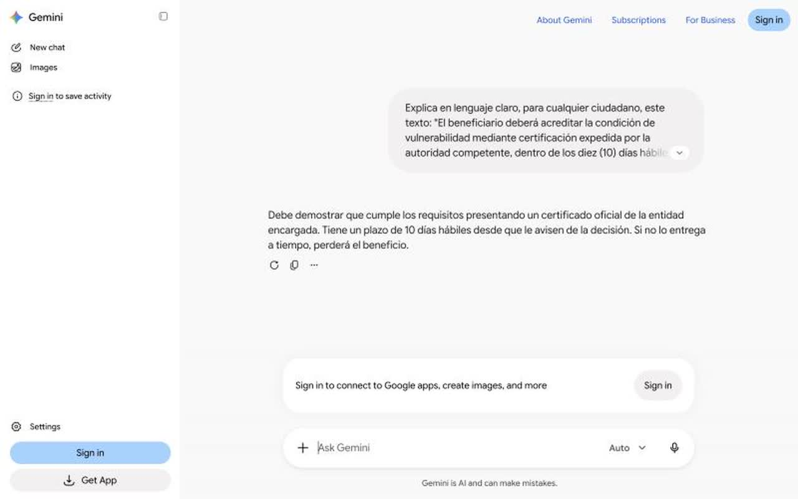
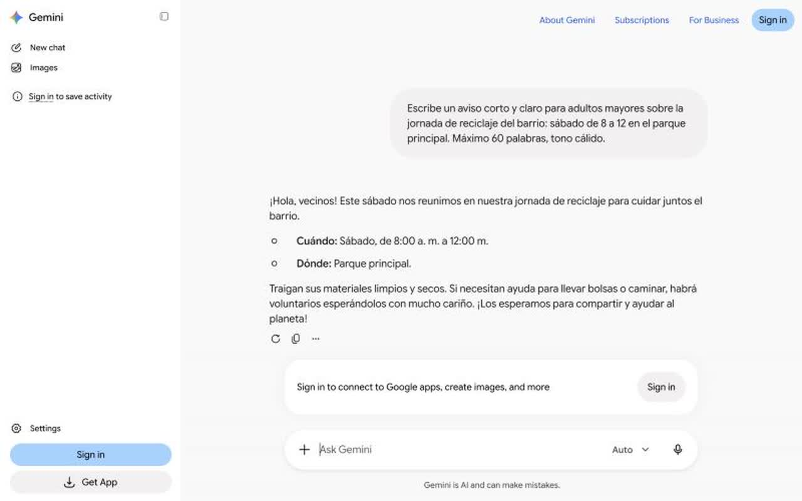
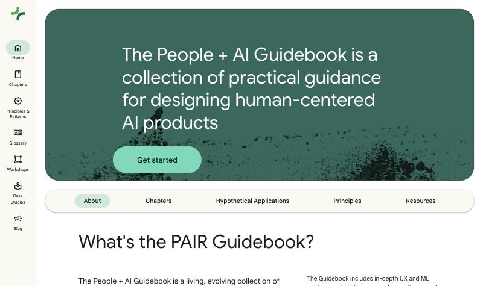
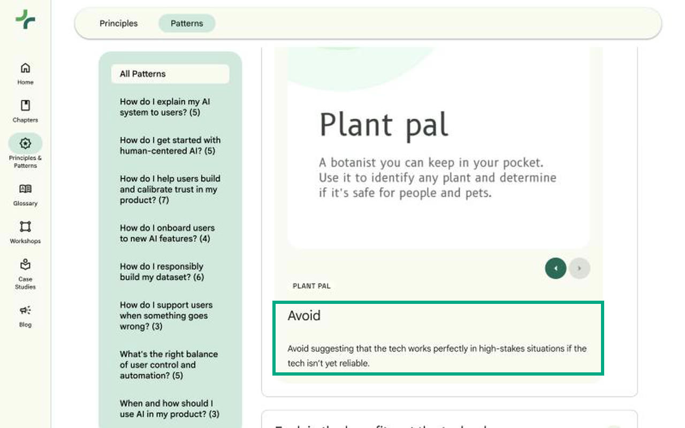
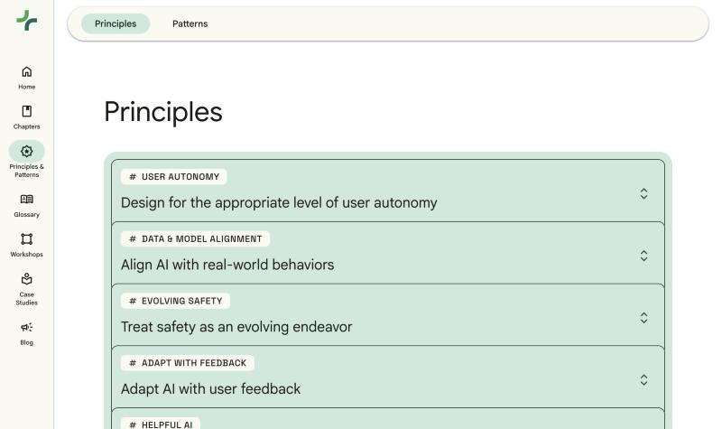
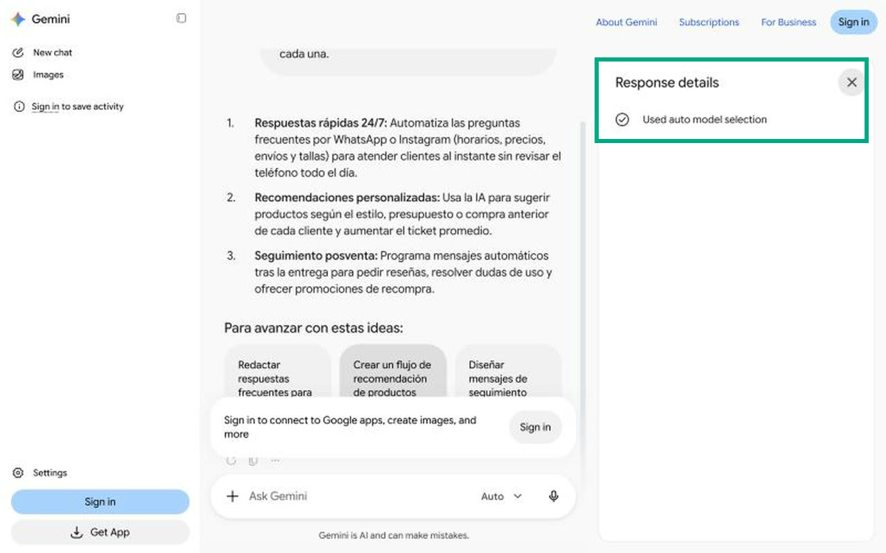

explain.la 2026 · GenAI
Cómo diseñar IA Generativa
Con base en la investigación de Google PAIR · People + AI Research
Software Engineer
Pregunta a la sala
01
Sin tecnicismos, prometido.
Le das una instrucción en tus palabras, un prompt, y produce algo nuevo: texto, imágenes, audio, video o código.
Calcula, palabra por palabra, lo más probable
Un texto que no existía antes
Y todo el contexto que le diste
La más probable según lo que aprendió
Hasta armar la respuesta completa
Aunque a veces se lo invente
Cuando se inventa algo con total seguridad, lo llamamos alucinación.
¿Qué cambió?
Interactivo · Vota con la mano
“Estimada ciudadana: su solicitud fue recibida y será atendida en un plazo de 10 días hábiles. Gracias por su paciencia.”
“Las ciudades no se miden en metros, sino en las veces que alguien te sostiene la puerta.”
Los dos los escribió una IA. Ninguno dice de dónde salió la información ni si es verdad.
02
Más de lo que imaginas, con herramientas que ya existen.
Seis capacidades
Demo 1 · Gemini · Sector público
“El beneficiario deberá acreditar la condición de vulnerabilidad mediante certificación expedida por la autoridad competente… so pena de la pérdida del beneficio.”
“Debe demostrar que cumple los requisitos presentando un certificado oficial. Tiene 10 días hábiles. Si no lo entrega a tiempo, perderá el beneficio.”

Grabación real · gemini.google.comDemo 2 · Gemini · Comunicación
Pido un aviso para adultos mayores
Defino lugar, hora, extensión y tono
Gemini propone un texto cálido y claro
Una persona revisa antes de publicar

Grabación real · gemini.google.comDemo 3 · Gemini Notebook (antes NotebookLM)
Subes normas, informes o manuales y la IA responde basada solo en esas fuentes, citándolas.
Para empresas
Para el sector público
Construir con IA ya es fácil.
Lo difícil es que la gente confíe en lo que construimos.
03
Lo que Google PAIR investigó, y comparte gratis.
People + AI Research
Un equipo multidisciplinario de Google que investiga cómo vivimos la IA y crea herramientas y guías de diseño.
Su idea central: la IA se construye con las comunidades a las que afecta.

Por qué importa
Según PAIR, como estos sistemas trabajan con probabilidades, en algún momento darán una respuesta incorrecta o inesperada. El diseño decide si la gente lo nota a tiempo.
Un ciudadano sigue un requisito que la IA inventó.
La empresa invierte en IA y sus equipos la ignoran.
La gente sabe cuándo creerle y cuándo revisar.
pair.withgoogle.com/guidebook
Una guía práctica, gratuita y viva para crear productos con IA centrados en las personas. Su edición más reciente se enfoca en IA Generativa.
6
capítulos con preguntas clave
5
principios de producto
23
patrones de diseño
+
talleres, casos de estudio y glosario
Creative Commons BY-NC-SA 4.0 · tercera edición, abril 2025
Video · Recorrido real por pair.withgoogle.com/guidebook

Grabación real · pair.withgoogle.comLos 6 capítulos, en preguntas
5 principios

Autonomía: la persona decide cuánto delega.
Alineación: que la IA refleje el mundo real.
Seguridad viva: no termina al lanzar.
Feedback: escuchar y mejorar.
IA útil: que mejore el trabajo y el juego.
Un patrón de cerca · Set the right expectations
Ser transparente sobre lo que el producto con IA puede y no puede hacer.
En el Estado: “Este asistente orienta sobre requisitos. La decisión final la toma un funcionario.”
En una empresa: “Nuestro asistente nunca se equivoca y responde todo sobre tu contrato.”
Video · Los patrones de PAIR en una app real

Grabación real · gemini.google.comPara cualquiera que use o cree con IA
Negocio, legal, atención y tecnología con los talleres del Guidebook
Los capítulos como preguntas obligatorias
Para que diseño, negocio y tecnología hablen de lo mismo
No es la única
04
Tú decides: ¿esta IA merece confianza?
Interactivo · El semáforo
Que diga que es IA y ofrezca hablar con una persona.
La IA ayuda, no reemplaza. Revisar siempre.
Necesita una persona, una explicación y cómo apelar.
La idea más importante
Ni desconfianza total ni fe ciega: que la gente sepa cuándo creerle a la IA y cuándo revisar.
No la usan y pierden su valor
Saben qué hace bien y qué no
No ven sus errores
Para llevar · Toma foto
¿Qué necesidad real de las personas resuelve?
¿Saben que hablan con una IA y qué puede (y no) hacer?
¿Pueden corregirla, deshacer o pedir una persona?
¿Qué pasa cuando se equivoca, y quién responde?
¿Cómo vamos a escuchar y mejorar después?
Gracias, explain.la